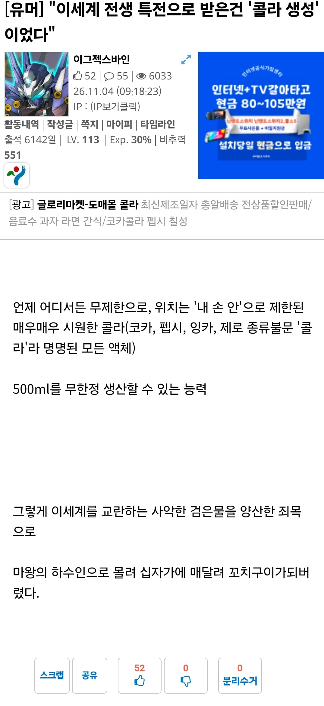

"이세계 21세기 문화침공 맛 좀 볼래?"
자매품으로
비데와 깨끗한 물이 나오는 화장실 소환,
대기중의 마나로 인터넷과 배터리 걱정없는 스마트폰 소환,
조미료, 양념, 장 종류 등의 가공식품을 소환하던 이들이 상인조합 및 귀족들에 붙잡혀 노예로 쓰이다 마왕(전생자)에게 구원받았다.

"이세계 21세기 문화침공 맛 좀 볼래?"
자매품으로
비데와 깨끗한 물이 나오는 화장실 소환,
대기중의 마나로 인터넷과 배터리 걱정없는 스마트폰 소환,
조미료, 양념, 장 종류 등의 가공식품을 소환하던 이들이 상인조합 및 귀족들에 붙잡혀 노예로 쓰이다 마왕(전생자)에게 구원받았다.
마왕 정수리에 손 댈정도 실력이면 굳이...
국왕의 머리를 손에 쥐고 “콜라소환”
그날 국왕의 머리는 검은 물이 되어버렸다
콜라콜라 열매임?
짜장면 소환권이자나
"맥콜 소환"
500ml인지 무한인지 확실하게좀 하지..
500ml 무한정이라고 써있잖아 매우매우 시원한
용량 500ml 단위로 무한 소환이라는 소리인듯
"닥터페퍼"
'언제 어디서든 무제한' 이거 걍 씹사긴데ㅋㅋㅋ 소환에 시간차 조건이 없으면 질량 부피 무한복사가능 아님?
콜라로 살수대첩 가능
콜라로 왕국 수장 시키기 ㅋㅋㅋ
행성 파괴자급 능력임
바로 상단에게 납치되서 짜릿한 검은물과 끓인 후 나오는 액상과당을 고문할때마다 뽑아내는 생체 디스펜서행일듯
뭐? 닥터페퍼는 콜라가 아니라고?
산 위에 올라가서 콜라로 수공하면 이세계 완!
초당 1병씩 500ml를 생성하고 맨땅에 붓는다면 229억년뒤 지구기준 해수면 1m 상승가능하다네
세계 완전침수는 280조년 걸림
어느 순간부터는 증발되는 양이 더 많아질텐데
왜 초당으로 제한을 걸지? 1피코세컨 단위로 소환하면 국가단위 멸망도 바로가능함 잘만 하면 에너지파처럼 쏠수도있을듯
ㄹㅇ 한곳에 응축시켜서 무한히 한자리에 소환하면 핵폭발도 가능
인터넷이 되어봤자 뭐하나, 서비스 재공자가 없는데
신이 준건데 왜 감별 못함?
데스터치:
신체 일부에 손이닿으면 혈관에 콜라 500 주입시켜 즉사
상고토의 위대한 도시들 중에서도 으뜸이던 판사이의 육형제 탑이 영원히 콜라 아래로 잠겨버렸을 때 베미온 마립간은 미쳐버렸다.
맨손 격투계의 1황인가 손에 스치기만 해도 몸속에 콜라가 생성되어 사망..
'내 손안에'
그럼 마왕 정수리 잡고 소환하면 되잖아
이런 말 한 사람 있었겠네